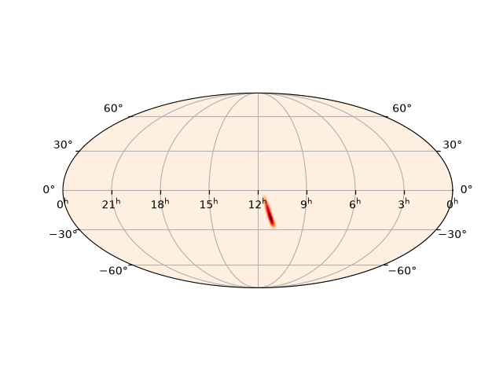
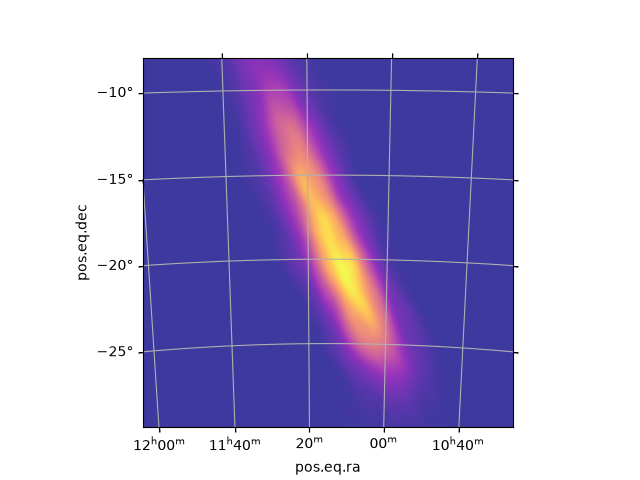
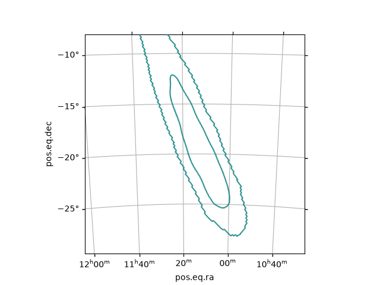
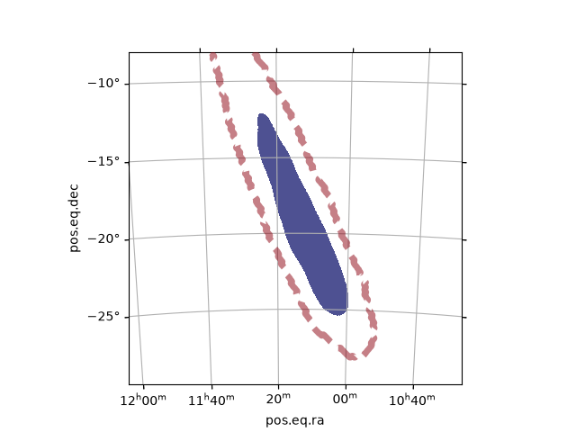
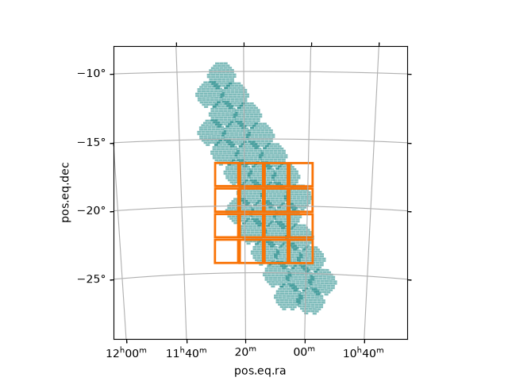
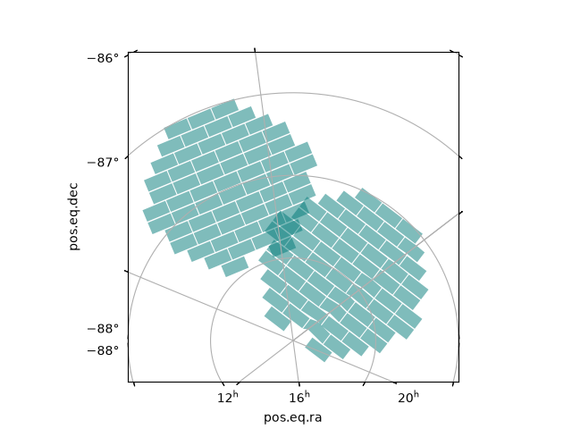

Plotting Utilities#
This section describes the plotting ultilities available in healpix-painter.
In general, these functions facilitate the addition of some element to an existing Matplotlib Axes,
and are best used with Axes created with the special WCSAxes subclasses provided by ligo.skymap.
Plotting Skymaps as Gradients#
After initializing a suitable Axes object,
skymaps can be plotted as gradients using healpix_painter.io.plotting.plot_skymap_gradient():
In [1]: import os.path as pa
In [2]: import matplotlib.pyplot as plt
In [3]: import ligo.skymap.plot
In [4]: from healpix_painter.io.plotting import plot_skymap_gradient
In [5]: DATA_DIR = "doc/data"
# Initialize axes
In [6]: ax = plt.axes(projection="astro hours mollweide")
# Add grid lines
In [7]: ax.grid()
# Select a sample skymap
In [8]: skymap_path = pa.join(DATA_DIR, "S240511i.Bilby.multiorder.fits")
# Plot skymap
In [9]: plot_skymap_gradient(ax, skymap_path)
Out[9]: <matplotlib.image.AxesImage at 0x7f9873268f50>
{kind=link}

Other ligo.skymap Axes subclasses can be used,
and arguments for the underlying matplotlib.pyplot.imshow() call can be passed:
In [10]: ax = plt.axes(
....: projection="astro hours zoom",
....: center="11.25h -19d",
....: radius="11 deg",
....: )
....:
In [11]: ax.grid()
# Plot skymap
In [12]: plot_skymap_gradient(
....: ax,
....: skymap_path,
....: imshow_kwargs={
....: "cmap": "plasma",
....: "alpha": 0.8,
....: },
....: )
....:
Out[12]: <matplotlib.image.AxesImage at 0x7f9872fa6510>
{kind=link}

Plotting Skymaps as Contours#
Plotting skymap contours functions similarly to plotting gradients:
In [13]: from healpix_painter.io.plotting import plot_skymap_contours
In [14]: ax = plt.axes(
....: projection="astro hours zoom",
....: center="11.25h -19d",
....: radius="11 deg",
....: )
....:
In [15]: ax.grid()
# Plot contours
In [16]: plot_skymap_contours(ax, skymap_path)
Out[16]: <matplotlib.contour.QuadContourSet at 0x7f9872e26060>
{kind=link}

This function calls the ligo.skymap contour_hpx <https://lscsoft.docs.ligo.org/ligo.skymap/plot/allsky.html#ligo.skymap.plot.allsky.AutoScaledWCSAxes.contour_hpx> function by default;
setting filled=True will call contourf_hpx <https://lscsoft.docs.ligo.org/ligo.skymap/plot/allsky.html#ligo.skymap.plot.allsky.AutoScaledWCSAxes.contourf_hpx> instead, for filled contours.
Parameters for either can be set with the contour_kwargs argument:
In [17]: from healpix_painter.io.plotting import plot_skymap_contours
In [18]: ax = plt.axes(
....: projection="astro hours zoom",
....: center="11.25h -19d",
....: radius="11 deg",
....: )
....:
In [19]: ax.grid()
In [20]: plot_skymap_contours(
....: ax,
....: skymap_path,
....: contours=[90],
....: contour_kwargs={
....: "colors": "xkcd:crimson",
....: "linestyles": "dashed",
....: "linewidths": 5,
....: "alpha": 0.5,
....: },
....: )
....:
Out[20]: <matplotlib.contour.QuadContourSet at 0x7f9872e26210>
In [21]: plot_skymap_contours(
....: ax,
....: skymap_path,
....: contours=[0,50],
....: filled=True,
....: contour_kwargs={
....: "colors": "xkcd:darkblue",
....: "alpha": 0.7,
....: },
....: )
....:
Out[21]: <matplotlib.contour.QuadContourSet at 0x7f9872e54bf0>
{kind=link}

Plotting Telescope Footprints#
To plot on-sky footprints, the pointings must first be cast into an Astropy SkyCoord object:
In [22]: from astropy.coordinates import SkyCoord
In [23]: from astropy.table import Table
In [24]: pointings_table = Table.read(pa.join(DATA_DIR, "S240511i.pointings_decam.csv"))
In [25]: skycoord_decam = SkyCoord(
....: ra=pointings_table["ra"],
....: dec=pointings_table["dec"],
....: unit="deg",
....: )
....:
In [26]: skycoord_ztf = SkyCoord(
....: ra=pointings_table["ra"][0],
....: dec=pointings_table["dec"][0],
....: unit="deg",
....: )
....:
Footprints can then be added to an initialized Axes using healpix_painter.io.plotting.plot_footprints(),
after specifying the appropriate healpix_painter.footprints.Footprint object:
In [27]: from healpix_painter.io.plotting import plot_footprints
In [28]: from healpix_painter.telescopes.decam import DECamFootprint
In [29]: from healpix_painter.telescopes.ztf import ZTFFootprint
In [30]: ax = plt.axes(
....: projection="astro hours zoom",
....: center="11.25h -19d",
....: radius="11 deg",
....: )
....:
In [31]: ax.grid()
# DECam pointings
In [32]: plot_footprints(
....: ax,
....: DECamFootprint,
....: skycoord_decam,
....: );
....:
# ZTF pointings
In [33]: plot_footprints(
....: ax,
....: ZTFFootprint,
....: skycoord_ztf,
....: fill_kwargs={
....: "color": "xkcd:orange",
....: "fill": False,
....: "linewidth": 2,
....: },
....: );
....:
{kind=link}

See matplotlib.axes.Axes.fill for the available keywords to change the footprint appearance.
Footprint plotting behaves mostly as expected near the poles, but some artifacts may be present along the prime meridian:
In [34]: pointings_poles = Table.read(pa.join(DATA_DIR, "S250830bp.pointings_decam.csv"))
In [35]: ax = plt.axes(
....: projection="astro hours zoom",
....: center="3.5h -88.5d",
....: radius="2 deg",
....: )
....:
In [36]: ax.grid()
In [37]: skycoord_poles = SkyCoord(
....: ra=[15, 75],
....: dec=[-89, -88],
....: unit="deg",
....: )
....:
In [38]: plot_footprints(
....: ax,
....: DECamFootprint,
....: skycoord_poles,
....: );
....:
{kind=link}
